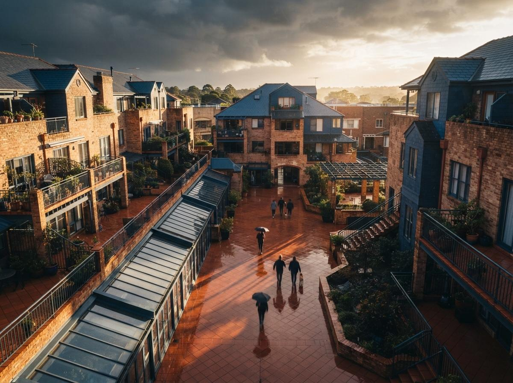
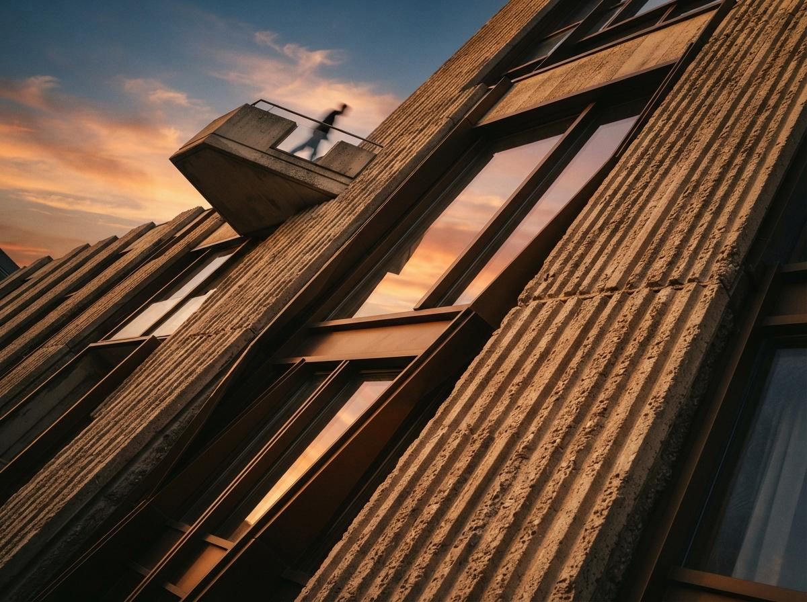

Confusing those two paths is the single most common way this goes wrong. The ComfyUI route is a power tool: feed it a flat floor plan image, and a node graph reconstructs the walls, guesses a camera, and generates a render that never had a 3D model behind it. It is genuinely impressive and we stand by the workflow we published for it. It is also an afternoon of graph-building the first time and a real skill to keep sharp. Veras does not compete with that pipeline. It skips its entire premise. Veras never looks at your floor plan as a picture. It looks at your Revit or SketchUp model as geometry, reads the walls, the openings and the levels you already drew, and paints whatever camera you set inside that same viewport.
That distinction is the whole article. If you have a plan and nothing else, ComfyUI's image-in-image-out path is the one that works with zero modeling. If you have, or are willing to spend twenty minutes building, an actual 3D massing of that plan in the BIM app you already use, Veras turns the render into the fastest step in the process instead of the slowest one.
Two paths, one plan
Say the same one-bedroom apartment plan lands on your desk both ways. The ComfyUI path stays true to its name: depth pass, Canny edges, a Flux checkpoint, a tiled upscale, all wired by hand or loaded from a saved graph, and the output is a render generated from an image with no model underneath it. It is the right tool when a plan is all you have, when the geometry does not need to survive into construction documents, or when you are testing a look before committing to a model at all.
The Veras path assumes the opposite starting point: you build, or you already have, a real model. Import or trace the plan in Revit as walls on the correct levels, or block it out in SketchUp as extruded volumes with openings cut. Fifteen to twenty minutes for a simple unit plan, less if the CAD or PDF import is clean. Once the massing exists, there is no export, no PNG, no round-trip to another application. You open the Veras panel inside the same window, set a camera, write a short material and lighting prompt, and render. The plan never leaves the file it was drawn in.
ComfyUI renders a picture of a plan. Veras renders the model the plan became. Pick the path that matches what is actually on your desk.

The 40-minute run, start to render
Here is the sequence we ran on a straightforward two-bedroom unit plan, timed against the clock, entirely inside SketchUp.
- 0 to 18 min — build the massing. Trace exterior and interior walls off the plan at correct thickness, extrude to a sensible ceiling height, cut window and door openings. No furniture, no finishes. This is the only step that resembles modeling.
- 18 to 24 min — block the room reads. Rough volumes for a kitchen island, a sofa mass, a bed platform. Veras needs enough geometry to know where a couch belongs, not a finished interior model.
- 24 to 30 min — set the camera and open Veras. Pick an eye-level interior shot or a cutaway axon depending on what the client asked to see. The panel sits inside SketchUp, so this is a click, not an export.
- 30 to 38 min — prompt and render. A short material and mood description, one reference image if you have a precedent, then a first pass. Veras reads your massing as structure, so a wall stays a wall through the render rather than becoming a suggestion.
- 38 to 40 min — a second pass with the note applied. The first render is rarely final. One prompt adjustment, one more pass, and it is client-ready.
Forty minutes, and every one of them spent in the file the model actually lives in. We walked the same combined-app version of this, V-Ray plus Veras inside 3ds Max and Rhino rather than SketchUp, in a separate workflow piece, and the timing holds regardless of which host application carries the plugin.
Where each path actually wins
| Situation | Better path | Why |
|---|---|---|
| Only a flat plan image, no model | ComfyUI | Renders directly from pixels, no modeling required |
| Deadline is today, model exists or is fast to block | Veras | No export, no round-trip, render lives inside the file |
| Need the geometry to survive into CDs | Veras | You built real walls on real levels, not a picture |
| Testing a look before committing to a model | ComfyUI | Cheaper to iterate on an image than rebuild a massing |
| Team already owns SketchUp, Revit or a V-Ray seat | Veras | Credit-based add-on to software already licensed |
The credit math is worth stating plainly, because it changes which path is cheap. Veras runs on a credit model with an entry annual plan around 29 dollars a month, and it is a plugin, not a subscription to a whole new application; you are paying for renders inside a seat you already own. ComfyUI is free to run locally beyond your own compute, but it costs the hour or two of setup and maintenance that a plugin skips entirely. Neither number makes the other path wrong. They make the two paths answer different questions: what does an hour cost, versus what does a render cost.

What the plan-to-render market keeps getting backwards
Most of the "floor plan to 3D render" content this year, including in the Nano Banana plus Photoshop workflow we tested and the tool we looked at in our Nano Banana 2 versus GPT Image 2 comparison, treats the plan as an image problem: feed a picture in, get a picture out, and the walls are whatever the model decided they should be. That is a legitimate category and those tools are genuinely useful for early concept work where nothing needs to be buildable. It is a different category from what Veras does, and pretending they compete on the same axis is how architects end up disappointed with the wrong tool for the job. If the render needs to answer to a set of construction documents eventually, model it and let Veras paint the model. If it only needs to answer to a client's imagination for a week, an image-in pipeline is faster to get wrong ideas out of the room.
Our take
The honest recommendation is boring: ask what is actually on your desk before you pick a tool. A plan with no model behind it and no time to build one, ComfyUI's image pipeline is the right call, and it is the one we would reach for on a sketch that might get thrown away by lunch. A plan you were always going to model anyway, with a deadline that landed today, Veras turns that same forty minutes into a render instead of a render plus an export plus an import plus a prayer that the second application read your geometry correctly. Most studios need both paths on the shelf. Know which drawer to open before the client calls.
Written from the 11 August 2026 intel sweep, which surfaced continued coverage of Veras's native integration across Revit, SketchUp, Rhino, Vectorworks, Archicad, Enscape, V-Ray and Corona. Pricing described as stated by Chaos; we have not re-benchmarked credit costs against a live invoice. ArchiGen AI carries no sponsored placements, including from Chaos.